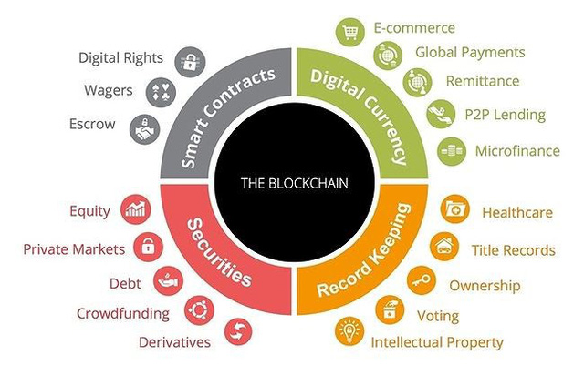
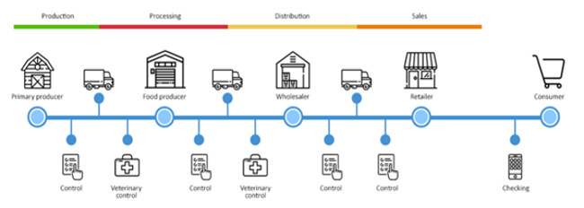
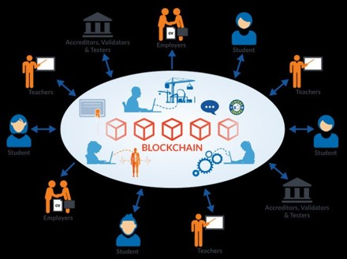
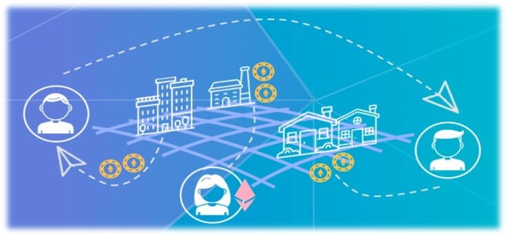
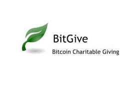
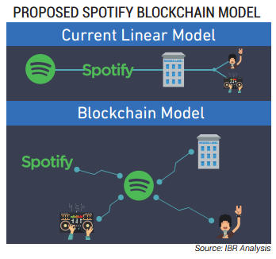
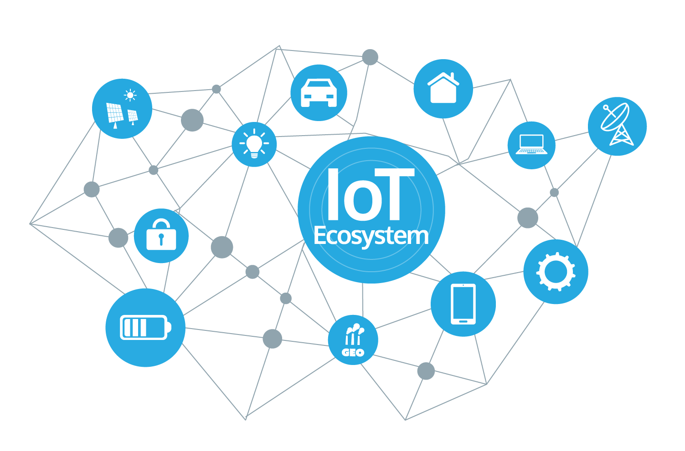

BLOCKCHAIN APPLICATIONS IN DAILY LIFE
INDEX
Security
Supply chains and logistics
Education
Healthcare
Real estate
Insurance
Charity
Financial services
Entertainment
E-commerce
IOT - Internet of thing

1.Security
Blockchains are nearly unhackable. Thanks to blockchain technology, each transaction is a "block", each block has the same role. Data is not centralized on any one server, cannot be deleted or is very difficult to change. With traditional information storage, if one server is hacked, the entire system will be paralyzed. To take down the entire blockchain network, hackers need to take down all "blocks" on the system at the same time. And this is impossible.

Watch more: 12 major cyber attacks in history
2.Supply chains and logistics
IBM Blockchain: Knowing the status and condition of every product on your supply chain from raw materials to distribution is critical. Blockchain for supply chains allows transparency with a shared record of ownership and location of parts and products in real time.
Food industry: The food industry’s complex network from farmers to grocers makes tracking down food-borne illnesses challenging. Blockchain can improve the transparency and efficiency of finding out what food might be contaminated and where throughout the supply chain.
Example: Blockchain provides tangible proof of certifications and product claims through tags and audits. It allows for verification of certificates related to origin, environmental impact, and animal welfare, building trust with consumers. The use of blockchain in the dairy industry fosters greater trust in products, leading to increased demand. By improving product quality, safety regulation, and connecting farmers and consumers through a decentralized platform, blockchain is driving the next technological revolution.
For manufacturers: They can store information of all milk cartons currently on the market to know if those milk cartons have been consumed or not, how many have been consumed abd how many are expired.
For consumers: They can verify if a milk carton is genuine or not. Thanks to that, all counterfeit products will be prevented.
Back to top3.Education
Degree and certificate verification is always a complicated issue. Looking up "Buy Fake certificate” on google alone generates over 25 million search results and some providers even boast about creating them under 24 hours.
The management of the certificates and degrees of universities in general or vocational training institutions in particular if applied Blockchain technology will contribute to transparency of student records as well as help employers easy. Easily track the origin of the training institution or the learning process of the candidates from low to high.
Holberton School of software engineering in San Francisco established a project-based alternative to college. In October 2015, the school announced plans to share academic certificates on blockchain from 2017. “For employers, it avoids having them to spend valuable time checking candidates’ educational credentials by having to call universities or to pay a third party to do the job,” Sylvain Kalache, co-founder at Holberton School, told CNBC via email.
Back to top4. Healthcare
When patients visit or test in hospital, all their results will be stored using blockchain technology that will help them secure all of their information and test scores.
In the healthcare industry, blockchain brings more transparency in storing and sharing patient data, medical records, drug supply chain information, and other critical data. Moreover, blockchain empowers the patient to control who has access to their data, ensuring transparency and accountability.
MedicalChain-The first healthcare company using blockchain technology to facilitate the storage and utilization of electronic health records in order to deliver a complete telemedicine experience. They are real practicing doctors in the UK healthcare structure and want to change the system from within.
Nano Vision-Looking to catapult medical innovation away from traditional data silos and incompatible records systems, Nano Vision combines the power of blockchain with artificial intelligence (AI) to gather molecular-level data on Nano Tokens. AI then sifts through the data to find trends and analyze connections that will lead to medical breakthroughs.
Back to top
5.Real estate
BitProperty: Using blockchain and smart contracts, BitProperty wants to democratize opportunity and create a decentralized society by allowing anyone anywhere in the world (except the U.S. and Japan due to regulatory concerns) to invest in real estate.
Deadcoin: Rather than a typical 6% real estate commission, Deedcoin runs on 1% and hopes to be the new way for home buyers and sellers to connect with real estate agents who accept a lower commission.
Ubiquity: This Software-as-a-Service (Saas) blockchain platform offers a simpler user experience to securely record property information to ensure a clean record of ownership.
Back to top6.Insurance
Accenture: With goals to boost efficiency and productivity within the insurance industry, Accenture builds blockchain solutions for its insurance clients. They translate key insurance industry processes into blockchain-ready procedures that embed trust into the system.
Proof of insurance: Nationwide insurance company is currently testing a blockchain solution to provide proof-of-insurance information called RiskBlock. Ultimately, when this tool is fully deployed it will help law enforcement, insured and insurers verify insurance coverage in real time and accelerate claims processing.
Back to top7.Charity
BitGive: This gloabal donation platform leverages Bitcoin and blockchain technology to provide greater transparency to donors by sharing real-time financial and project information. Save the Children, The Water Project and Medic Mobile are a few of the charities working with BitGive.
AidCoin: Since research shows 43% of people don’t trust charities, AidCoin hopes to improve that trust with distributed ledgers, smart contracts and cryptocurrencies and make the nonprofit sector more transparent.
Utopi: A lack of transparency has plagued charitable giving, but Utopi hopes to improve transparency in nonprofits. When donors give using the Utopi platform they can see exactly how every penny is spent.
Back to top8.Financial services
In Asia, OCBC Bank is the first bank in the world to use blockchain technology in domestic and international money transfer services. It increases efficiency, enhances transparency, reduces costs, and improve customer experience.
At this point, the financial market is more like a battlefield, where institutions can only survive by forming alliances in commercializing blockchain technology. Rising above is R3 - Alliance of three of Australia's largest banks includes Westpac, Commonwealth, NAB, along with 40 banks and many financial institutions around the world.
Ripple: Ripple aims to be a global payment solution provider by connecting banks, payment providers, corporations and digital asset exchanges to allow instant, on-demand settlement globally.
Bitcoin Atom: A new fork of Bitcoin that allows everyone to easily exchange cryptocurrencies without any trading fees and no exchange hacks, making Bitcoin truly decentralized again. The technology is based on atomic swaps—an invaluable tool for exchanging one cryptocurrency with another (e.g. 1000 BTC with 56500 LTC) and no need for a trusted third party. But currently, widespread adoption of atomic swaps has been prevented because they require highly technical skills; something Bitcoin Atom will solve.
Back to top9.Entertainment
Spotify: When Spotify acquired blockchain startup Mediachain Labs it was to help develop solutions via a decentralized database to better connect artists and licensing agreements with the tracks on Spotify’s service.
Guts: A transparent ticketing ecosystem that uses blockchain technology to eliminate ticket fraud and the secondary ticket market.
Back to top10.E-commerce
If you own an online store and want to increase efficiency, you should use blockchain technology. It will not only change how you operate but also address all your problems and come up with a permanent solution that you can follow.
The potential of blockchain is enormous, and as more and more sectors adopt the technology, its influence will only increase rapidly.
The emergence of blockchain has already begun to alter the e-commerce sector, and in the next years, it will radically change the environment of online buying. By removing intermediaries and streamlining the process, the technology will enable consumers to interact directly with shops.
11.Internet of things - IOT
In the future, all devices will be connected to the internet and fully automated. But this can happen only when the connection is secure. Suppose that a server is knocked out, then all devices in an area will be affected. Therefore, blockchain technology is a practical solution to this problem.
Back to top